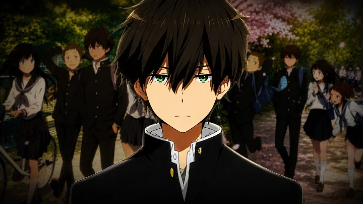
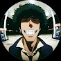
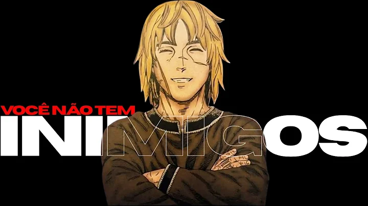
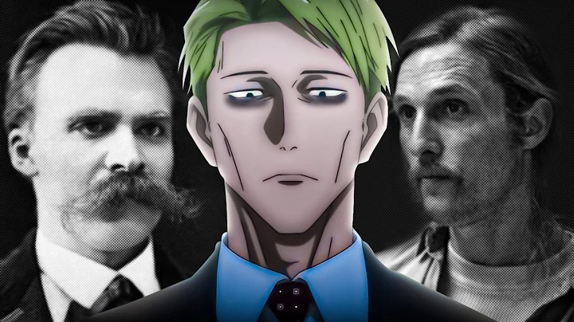
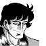
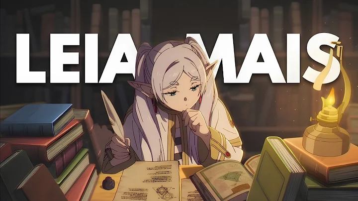
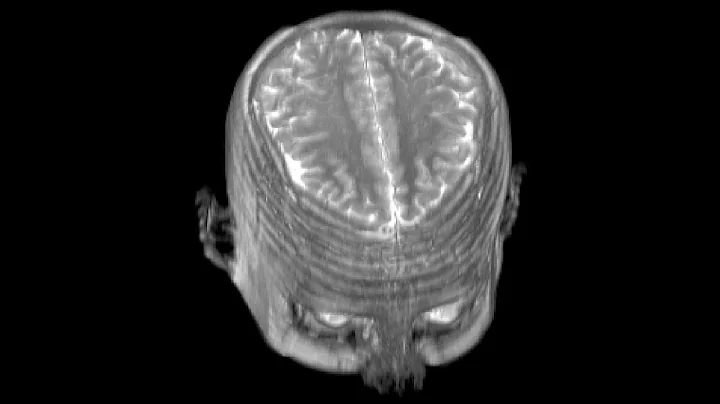
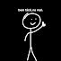

10:30
Oreki Houtarou: O Protagonista GÊNIO mais REAL
Denzetsu 2
155 mil visualizações • há 2 semanas


Denzetsu 2
155 mil visualizações • há 2 semanas

Filosofatos
119 mil visualizações • há 4 semanas


Greg
89 mil visualizações • há 2 meses

RegentRock
28 mil visualizações • há 3 semanas

JJ
406 mil visualizações • há 1 mês

Bem fácil, na real
193 mil visualizações • há 3 meses